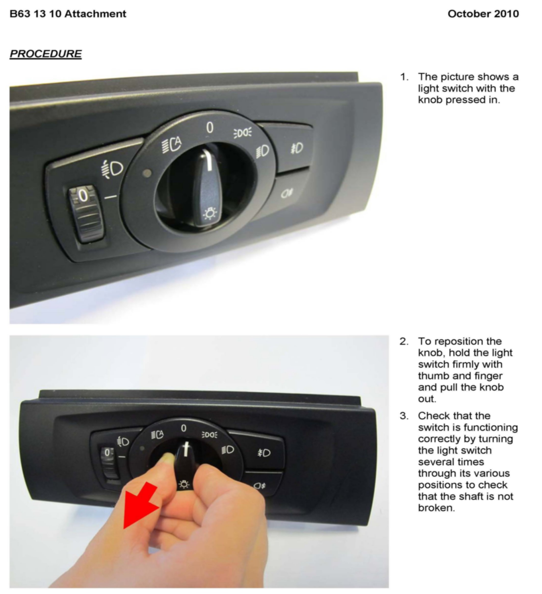

Lighting - Knob On Light Switch Is Pushed In
SI B63 13 10Lights
November 2010
Technical Service
SUBJECT
Knob on Light Switch Is Pushed In
MODEL
E82, E88 (1 Series)
E90, E91, E92, E93 (3 Series)
SITUATION
The knob on the light switch is pushed in - see the attachment.
CAUSE
The knob has been bumped, most likely by the driver entering or exiting the vehicle.
Note that the knob is designed to push in as a safety feature, to avoid injury during a crash.
CORRECTION
Reset the switch to its original setting.
PROCEDURE
See the attachment.
To avoid a repeat customer center visit, demonstrate to the customer how the switch gets pushed in, and how to reset it.
WARRANTY INFORMATION
For information only. The switch is performing as designed.
ATTACHMENTS

B631310 PROCEDURE